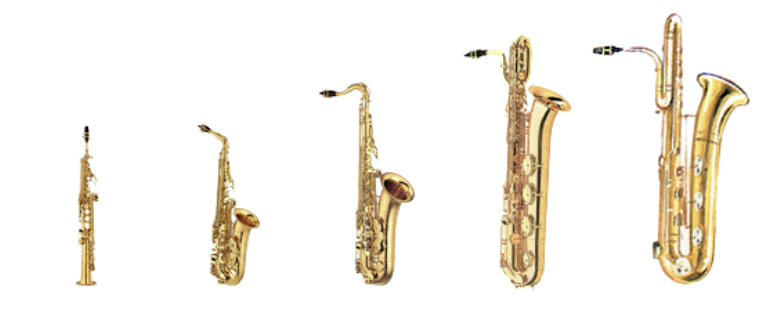

O Saxofone é um instrumento que comparado a outros sopros tem um alcance (oitavas) relativamente pequeno, como consequência ele tem uma família extensa.
Os quatro mais comumente encontrados e tocados são Sopranos, Altos, Tenores e Baritonos.
(Respectivamente representados na imagem)
Outros dois membros também são conhecidos apresar de bem menos comuns Soprilos e Baixos.
Contudo a família tem uma extensão enorme possuindo inclusive integrantes curiosos como o Tubax junção de uma tuba com o sax baixo com o intuito de reduzir a ocupação espacial do enorme instrumento.
Ou o impressionante SubContraBaixo 2 que mede alguns metros de altura e hoje se encontra em alguns museus de musica ou em coleções privadas.